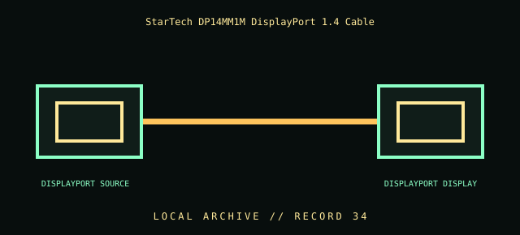

[ INDIVIDUAL COMPONENT // CABLES & ADAPTERS ]
StarTech DP14MM1M DisplayPort 1.4 Cable
StarTech.com DP14MM1M 1 m DisplayPort cable. This entry identifies the documented model and does not claim that visually similar products share its pinout, protocol, capability, or host compatibility.

COMPATIBILITY WARNING: Verify the exact product model, host/device role, signal protocol, electrical requirements, and manual before connection. Connector fit alone does not prove compatibility.
Specifications
| Catalog subcategory | Display cables and adapters |
|---|---|
| Catalog identity | StarTech.com DP14MM1M 1 m DisplayPort cable |
| Verified protocol / model information | StarTech model DP14MM1M, 1 m DisplayPort cable; manufacturer lists HBR3 and 8K at 60 Hz capability. The cable does not grant display modes unsupported by either endpoint, GPU, timing, or source configuration. |
| Connector ends | DISPLAYPORT SOURCE → DISPLAYPORT DISPLAY; diagram is schematic, not a pinout map. |
Physical & electrical compatibility
Use between DisplayPort source and display in the supported direction; check latches and endpoint versions. HBR3/8K capability depends on the complete chain and mode, including chroma/color depth and refresh. Do not substitute a passive USB-C-to-DP cable or assume adapters preserve every feature.
Archival & handling notes
Retain DP14MM1M model label and record source/display plus tested resolution/refresh/color mode. Release the connector latch before removal; avoid pulling the cable while latched and do not kink it.
Record provenance, condition, label photographs, exact full part number/revision, host system, and any test method/result. Preserve packaging and source documents with the cable when available.
Manufacturer & standards references
- StarTech — DP14MM1M DisplayPort 1.4 cableManufacturer model, 1 m length, HBR3 and display capability listing.
- VESA — DisplayPort standards and productsOfficial DisplayPort technology reference; endpoint capabilities determine actual link mode.
Manufacturer documentation applies to the cited model; standards references describe the protocol family. Where product revisions or device support vary, the exact manufacturer manual and host documentation take precedence.